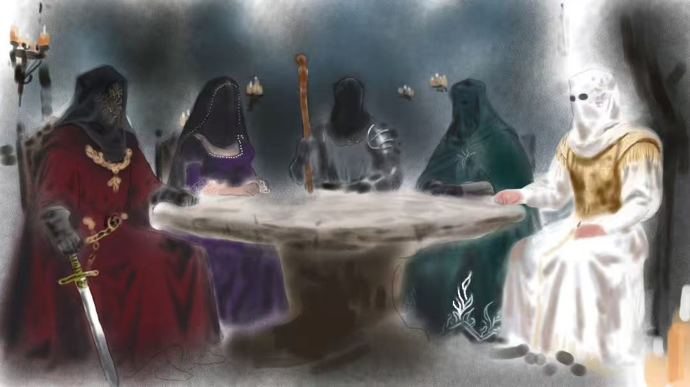
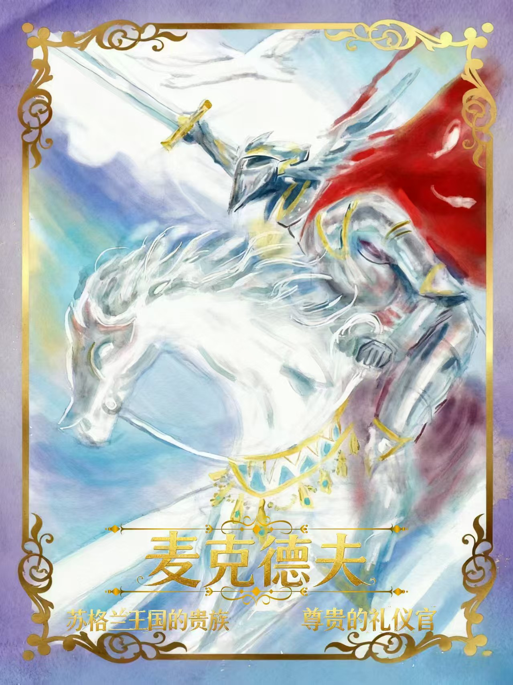
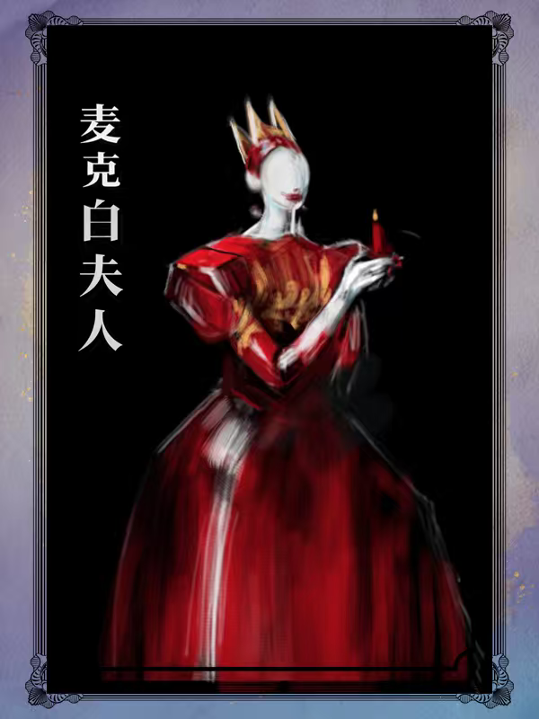
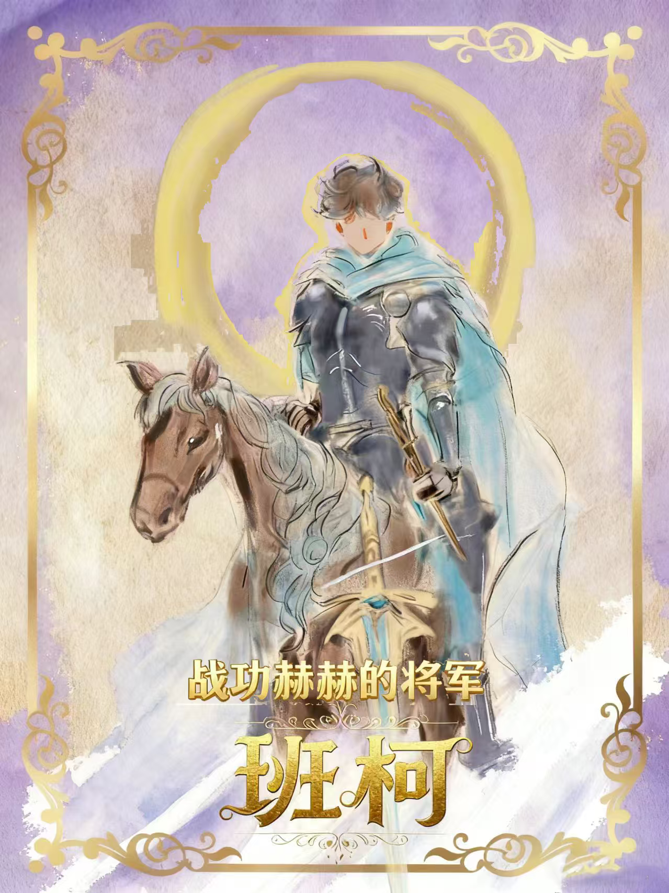
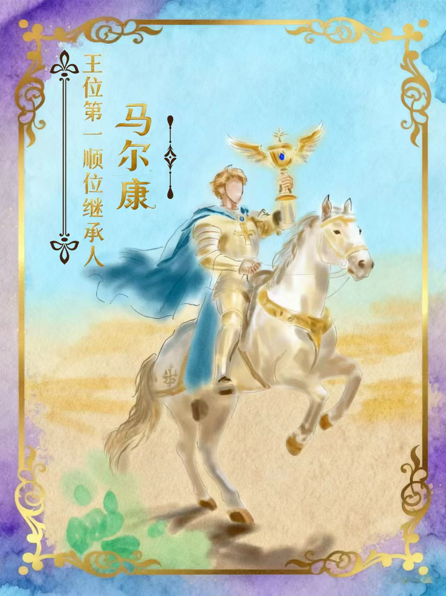
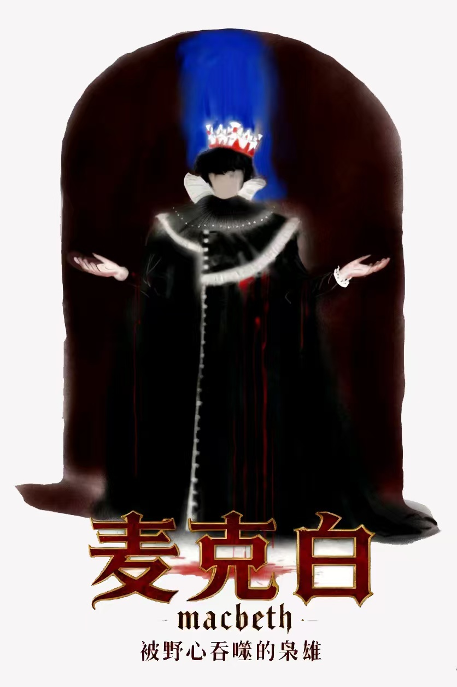

麦克德夫成功劝说马尔康起兵，并亲手杀掉麦克白为家人报仇。麦克白夫人因精神崩溃自杀而死。班柯避免被杀，马尔康成为新王，国家恢复正常秩序。
马尔康因怕受牵连而流亡英格兰，麦克白加冕，麦克白夫人成为摄政王后，麦克德夫全家被屠杀，你也被暗杀了。
麦克白加冕，麦克白夫人成为摄政王后，马尔康被麦克白指控而受死刑，麦克德夫全家被屠杀，班柯被暗杀。
班柯无法受辱而自杀。麦克白加冕，麦克德夫成功劝说马尔康起兵但战败
